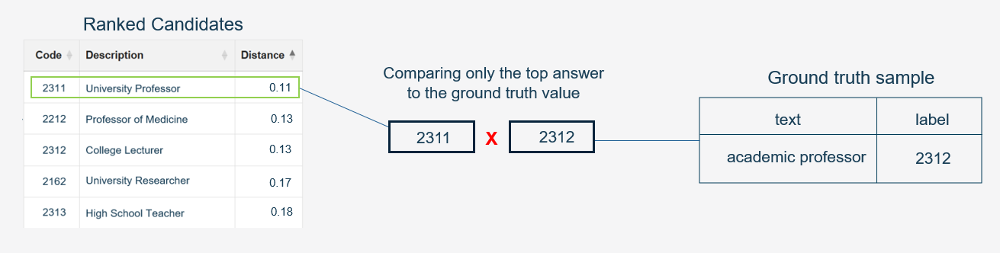

from classifai.indexers import VectorStore
from classifai.vectorisers import HuggingFaceVectoriser
# Initialize a vectoriser using a HuggingFace model
demo_vectoriser = HuggingFaceVectoriser(model_name="sentence-transformers/all-MiniLM-L6-v2")
# Initialize a vector store using the vectoriser and a CSV file
demo_vectorstore_full = VectorStore(
file_name="data/fake_soc_dataset.csv",
data_type="csv",
vectoriser=demo_vectoriser,
skip_save=True,
)ClassifAI Evaluation Module - Overview and Usage
The Evaluation module provides a toolkit to evaluate the performance of VectorStores in a multi-class, single-label classification setting. Provided the user has:
- a constructed VectorStore (or multiple VectorStores) built from historically labeled (or similar) data;
- a held out collection of labelled ground truth data, not in the VectorStore;
then this module can be used to evaluate VectorStore performance, presenting results with a variety of available metrics that can be specified by the user.
Multi-Class Single-Label Evaluation
Currently the evaluation module only evaluates single label predictions meaning that, while ClassifAI is designed to return a ranked list of several semantically similar candidate entries to a provided query sample, only the top result will be considered when comparing the VectorStore result to a ground truth label provided by a user.

The Evaluation module is currently in development, and in the future its feature set may be extended to include a broader range of evaluation tasks such as multi-class multi-label classification, where potentially multiple labels for a ground truth sample can be compared and evaluated against multiple ranked candidate predictions of the VectorStore.
For multi-class, single-label evaluation we have implemented several metrics that can be calculated, their names and descriptions are as follows:
| Metric | Description |
|---|---|
| Accuracy | The proportion of correctly predicted labels out of the total number of predictions. |
| Macro Recall | The average recall calculated independently for each class, treating all classes equally. |
| Macro Precision | The average precision calculated independently for each class, treating all classes equally. |
| Macro F1 | The harmonic mean of Macro Precision and Macro Recall, providing a balance between the two. |
In this notebook
This notebook will provide a demonstration of the following concepts:
An introduction to the Evaluation Module and its main class
EvaluationUse of the demo file
fake_soc_eval_queries.csvwhich is in theDEMO/data/repo folder. This data contains ground truth samples related to the demo knowledgebase CSV fileDEMO/data/fake_soc_dataset.csvCreating several VectorStores using the ‘fake_soc_dataset.csv’ file, using different amounts of data from the file to create several VectorStores of varying quality.
Setting up an Evaluation task using the fake queries file and a list of metrics to evaluate.
Tying this all together, evaluating the VectorStores against the ground truth query file using the evaluation module.
See the ClassifAI GitHub repository and DEMO/README.md for information on accessing the associated demo datasets needed for this (and other) notebook tutorials.
Building VectorStores to Evaluate
To begin, we’re going to create 2 VectorStores from our fake_soc_dataset.csv file which contains mock SOC survey responses and their corresponding occupation codes. One VectorStore will be built from the full dataset, and the second one will be built from half the dataset.
Since the second VectorStore will contain only half the training data, we can reason that it will not perform as well as the VectorStore built with the full dataset due to lack of coverage.
We’re now going to modify the fake_soc_dataset.csv file to remove half the samples, then build a VectorStore with that reduced dataset. We’ll do this by loading in the original data, cutting it in half and saving it to a new CSV file in the code below. Then build another VectorStore like with the code above.
import pandas as pd
# Load the CSV file into a DataFrame
df = pd.read_csv("data/fake_soc_dataset.csv")
print(df.shape)
# cut the dataframe in half
half_df = df.iloc[: len(df) // 2]
print(half_df.shape)
# save back to CSV
half_df.to_csv("data/fake_soc_dataset_half.csv", index=False)# now building the vector store with the half dataset, same as before but changing the file path
demo_vectorstore_half = VectorStore(
file_name="data/fake_soc_dataset_half.csv",
data_type="csv",
vectoriser=demo_vectoriser,
skip_save=True,
)Creating an Evaluation Object
ClassifAI provides an Evaluation class (in the Evaluation module) which can be used to load a collection of ground truth queries and specify metrics to use. The evaluator constructor accepts 4 arguments:
- A pandas dataframe with
['text', 'label']columns/headers both of type string, which represent the text sample queries and gold standard ground truth label respectively, - A list of evaluation metric names which must be strings corresponding to one of the current available metrics:
['accuracy', 'macro_recall', 'macro_precision', 'macro_f1'], - A
batch_sizewhich determines how many samples should be processed at once (smaller size will take longer but be more memory efficient), - A boolean argument
save_outputwhich determines if generated results should be saved to CSV.
Calling the constructor with these arguments, along with a boolean to save the results to file, will check that the inputs are valid and suitable for the task:
from classifai.evaluation import Evaluation
# loading our mock ground truth file into a pandas dataframe, setting the type of both columns to string.
ground_truths = pd.read_csv(
"data/fake_soc_eval_queries.csv", dtype={"text": str, "label": str}
) # Load the ground truths from the CSV file
# using the Evaluation class, passing the ground truth DF and metrics we want to evaluate.
evaluator = Evaluation(
ground_truths=ground_truths,
metrics=["macro_precision", "accuracy"], # we chose just 2 metrics this time
batch_size=16,
save_output=True,
)Running the above code should also present a FutureWarning. This is because at this time the Evaluation module is still in development and may be subject to future breaking changes in later updates.
Evaluating the performance of VectorStores
If the evaluator object instantiates correctly, we can then use the .evaluate() method which takes VectorStores and some corresponding names to evaluate against the ground truth.
For each VectorStore passed to it, the evaluate() method will:
Trigger the VectorStore to perform search over each of the queries in the grount truth dataset, obtaining 1 result for each,
The results will be collected and combined with the ground truth labels,
The predictions and ground truths will be used to calculate each of the metrics specified by the user in the constructor.
The evaluate method returns the results as a dataframe object and saves the results to a file inf the user set constructor argument
save_ouput=True
results = evaluator.evaluate(
vectorstores=[demo_vectorstore_full, demo_vectorstore_half],
vectorstore_names=["full data vectorstore", "half data vectorstore"],
output_file="./classifai_temp/demo_eval_results.csv", # leaving this line blank will save the results to evaluation_results.csv
)The results object is a dataframe with provided VectorStore names as the row indexes, and each column is associated with a given metric. We should also see the results have been saved to the specified output CSV file.
resultsFollowing through this demo correctly, the results should show that a VectorStore containing only half the available labelled data sees a significant drop in performance on the ground truth dataset compared to the VectorStore using all available data, according to the chosen metrics.
Efficient VectorStore Loading and other settings
We’ve already demonstrated the core features of the Evaluation module. This final section will show some additional implemented features including:
- Efficient ways to load VectorStores to avoid memory issues when using many and/or large VectorStores,
- More of the available metrics,
- Saving results to file without a specified filename.
In some cases, the user may want to evaluate many VectorStores in a single evaluation run, but more VectorStores require more memory. It may not be possible to load all VectorStores into memory at the same time. For this reason, the vectorstores parameter of Evaluation.evaluate() accepts callable functions that return VectorStores as well as instantiated VectorStores.
With this design, the user can write functions that will load VectorStores into memory at the time of the their evaluation. Once the evaluation is complete, the VectorStore will be dropped from memory, and memory is managed more efficiently.
# writing a function that will build/load the larger of our 2 VectorStores into memory when the function is called.
# you can also use the VectorStore.from_filespace method to load the VectorStore from the filespace if it has already been built and saved to disk.
def load_largest_vectorStore():
efficient_vectoriser = HuggingFaceVectoriser(model_name="sentence-transformers/all-MiniLM-L6-v2")
efficient_vectorstore = VectorStore(
file_name="data/fake_soc_dataset.csv",
data_type="csv",
vectoriser=efficient_vectoriser,
skip_save=True,
)
return efficient_vectorstore # these functions must return only the VectorStore object.second_evaluator = Evaluation(
ground_truths=ground_truths,
metrics=[
"accuracy",
"macro_precision",
"macro_recall",
"macro_f1",
], # this is all the available metrics, we can use them all at the same time.
batch_size=16,
save_output=True, # setting to False, only the results will be returned, not saved to a file.
)
second_results = second_evaluator.evaluate(
vectorstores=[
load_largest_vectorStore,
demo_vectorstore_half,
], # passing the function itself, not calling it. We can also pass one of our existing in memory vectorstores as well.
vectorstore_names=["efficiently loaded vectorstore", "half data vectorstore"],
)
second_resultsThats It!
The results (this time with more metrics) from the last evaluation run should be saved to the file in the current directory as evaluation_results.csv, since we didn’t specify a file name this time to save the results to. Remember you can disable writing results to file by setting save_output=False in the Evaluation constructor.
Finally, one more reminder that this module is still in development and may be subject to breaking changes in the future.